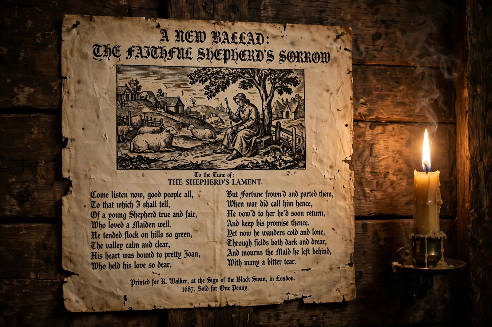

| Ballad | |
| Form | Narrative poem or song in short stanzas |
|---|---|
| Typical metre | Ballad stanza: quatrains of alternating iambic tetrameter and trimeter, rhyming ABCB |
| Major collections | The Child Ballads (1882–1898); Percy's Reliques (1765) |
| Subgenres | Traditional ballad, broadside ballad, literary ballad, murder ballad, blues ballad |

A ballad is a form of verse, often a narrative set to music. Ballads derive from the medieval French chanson balladée or ballade, originally dance songs, and were characteristic of British and Irish popular poetry and song from the later medieval period until the 19th century. The form survives worldwide in folk and popular music.
Traditional or folk ballads are anonymous narrative songs transmitted orally, telling dramatic stories of love, murder, the supernatural, outlawry and betrayal in terse, impersonal style, with dialogue and a refrain. The canonical collection is Francis James Child's The English and Scottish Popular Ballads (1882–1898), whose 305 "Child ballads" include "Barbara Allen", "Tam Lin", "Lord Randall" and "Sir Patrick Spens". Many survived longest in oral tradition in regions such as the Appalachian Mountains, where collectors like Cecil Sharp recorded them in the 1910s.
From the 16th century, ballads were printed cheaply on single sheets — broadsides — and sold by street singers, mixing news, sensation and sentiment. In the Romantic era poets imitated the form: Wordsworth and Coleridge's Lyrical Ballads (1798) included Coleridge's "The Rime of the Ancient Mariner", and Keats wrote "La Belle Dame sans Merci". John Gay's The Beggar's Opera (1728) founded the ballad opera genre.
Ballads crossed the Atlantic and fed into American folk, blues and country music, including the "murder ballad" tradition ("Banks of the Ohio", "Tom Dooley"). In modern popular music the word "ballad" has shifted meaning to denote a slow, sentimental love song, often with a big chorus — the "power ballad" of rock being a late example.